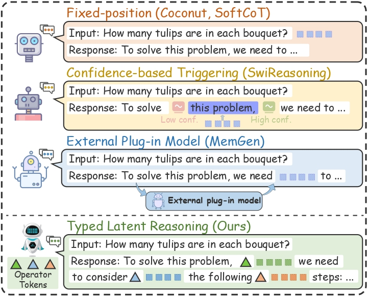
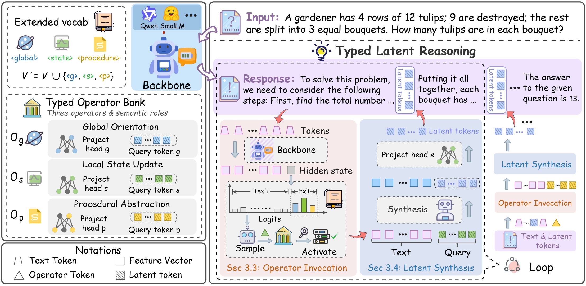
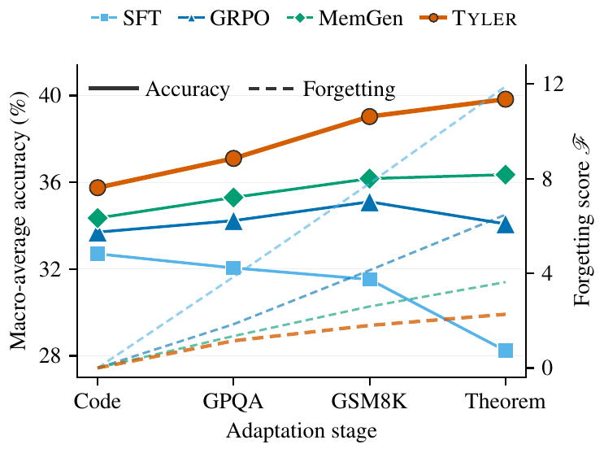
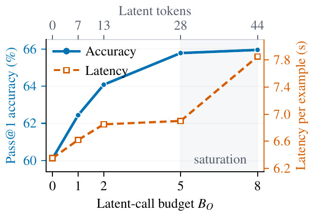
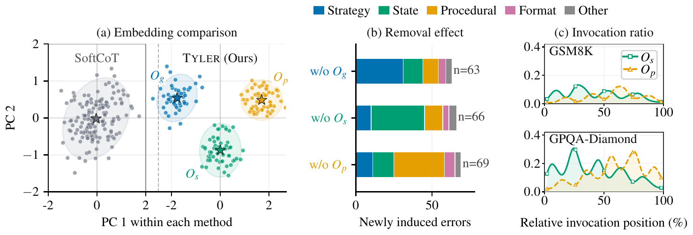

When to think, what to compute, and how much to allocate.

Chain-of-thought makes a model write out every intermediate step as text. That's redundant and slow, and it forces a rigid interface: the model must spell out its reasoning before it can answer, instead of computing internally when needed.
Tyler relaxes that interface. At each decoding step the model decides whether to emit a visible token or quietly switch to a typed latent operator that carries part of the computation in continuous representations. Prior latent-reasoning methods mostly focus on how to build latent tokens; Tyler instead reframes the problem as one of online control — when to think, what kind of computation to run, and how much budget to spend.
No fixed positions, no external trigger model. The choice between speaking and silently thinking competes inside a single next-action distribution, so the LLM itself stays in control.
Reasoning chains are functionally heterogeneous: some steps orient the problem, some update the evolving state, others reuse a procedure. Collapsing all of this into one undifferentiated latent vector throws that structure away. Tyler keeps it, with three operators whose type supplies an inductive bias while their behavior is learned from chain-of-thought data.
Frames the problem and plans the approach — invoked at the start of generation.
Maintains local intermediate state, most active in early and middle reasoning stages.
Reuses solution patterns — appears more often as reasoning approaches the answer.

When an operator fires, a shared LoRA-augmented synthesizer turns the current context into latent tokens — the backbone weights stay frozen, so this is parameter-efficient. The operators share that synthesizer but specialize through their own query tokens and projection heads, which is what lets them transfer across reasoning domains rather than memorizing a task-specific output format.
Separating what each operator computes from when it should be called keeps training stable: Stage 1 gives the operators a clear functional identity, and Stage 2 only has to learn a sparse routing policy on top of a fixed latent interface. Both stages train on just 15K math problem–solution traces from OpenR1-Math.
The latent operators and synthesis module are trained with heuristic position supervision while the backbone LLM stays frozen, anchoring each operator to its intended role.
A budget-aware invocation policy is optimized with GRPO. An operator-anchored auxiliary loss stabilizes learning at sparse invocation points.
Trained only on math traces, Tyler still improves scientific and theorem-oriented reasoning — and tops every baseline on average across two backbones.
| Method | GSM8K | MATH-500 | GPQA-D | TheoremQA | Average |
|---|---|---|---|---|---|
| CoT | 58.9 | 68.0 | 19.7 | 19.5 | 41.5 |
| MemGen (best baseline) | 84.2 | 70.2 | 25.3 | 27.3 | 51.7 |
| Tyler | 85.2 | 76.4 | 33.5 | 29.0 | 56.0 ↑14.5 |
Pass@1 accuracy (%) on SmolLM3-3B. Tyler also reaches 65.8 average on Qwen3-4B, +9.2 over CoT.
The gains hold up where baselines wobble. SFT helps the smaller backbone but slightly hurts the larger one; GRPO and MemGen each win on one model and not the other. Tyler is the only method that lands the best average on both backbones — and the largest jumps come on the out-of-domain benchmarks it was never trained on, improving GPQA-Diamond over CoT by up to 27 points.
It also adapts well over time. Trained sequentially across code, science, math, and theorem-oriented tasks, Tyler finishes with the highest macro-average accuracy (39.8%, about +3.5 over the strongest baseline) while forgetting the least — a forgetting score of just 2.3, roughly 1.4 points better than MemGen.


Their latent representations form separate clusters, and removing each one produces a different failure mode — drop Os and arithmetic/state errors rise; drop Op and procedural errors appear.
Harder problems trigger latent operators more often, and the policy follows a stage-aware rhythm: state updates dominate early, procedural abstractions take over near the answer.
